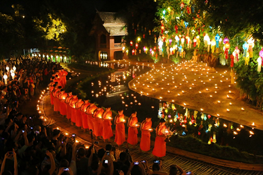
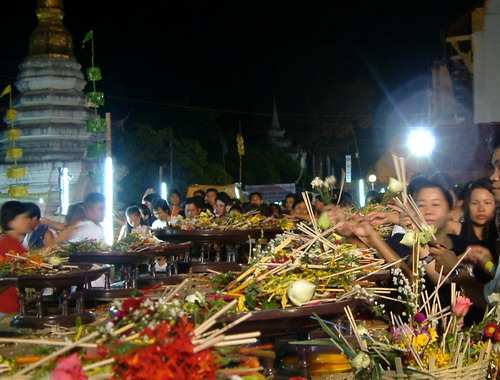
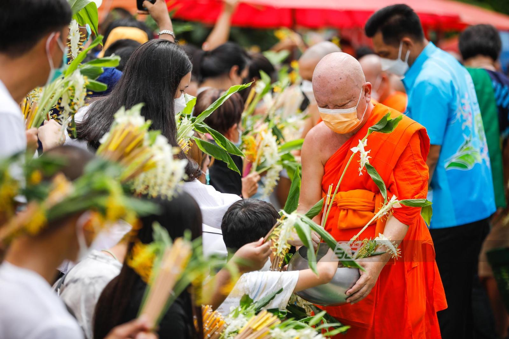
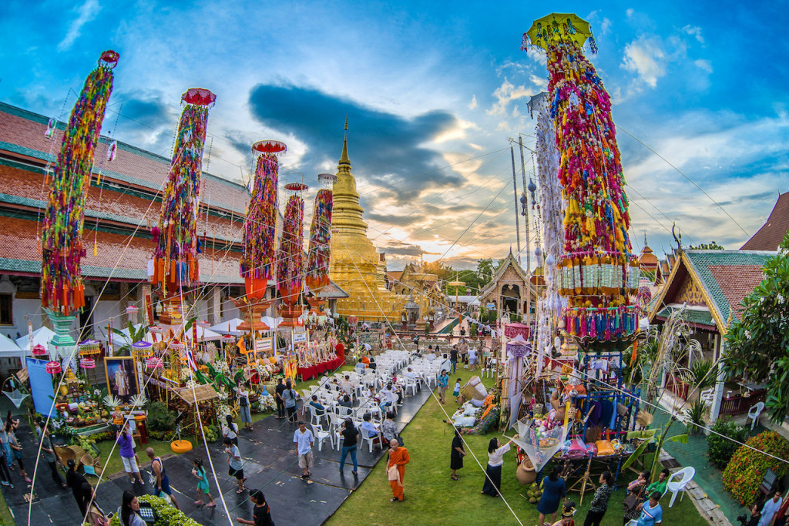
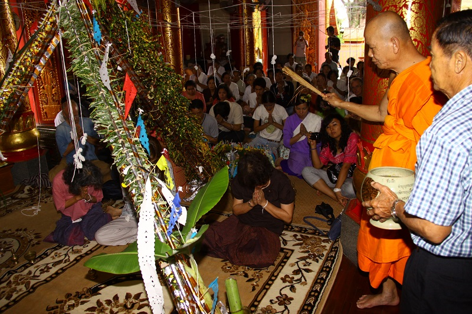

ประเพณีสำคัญของล้านนา

ปี๋ใหม่เมือง (สงกรานต์ล้านนา)
ประเพณีขึ้นปีใหม่ของล้านนา ระหว่างวันที่ 13-15 เมษายน ของทุกปี มีการสรงน้ำพระ รดน้ำดำหัวผู้ใหญ่ และเล่นสาดน้ำ

ยี่เป็ง (ลอยกระทงล้านนา)
ประเพณีในวันเพ็ญเดือนยี่ (เดือนสิบสอง) มีการปล่อยโคมลอย ลอยกระทง และจุดประทีปโคมไฟตามบ้านเรือน

เข้าอินทขีล
ประเพณีบูชาเสาหลักเมืองเชียงใหม่ ในเดือนพฤษภาคม-มิถุนายน ของทุกปี เพื่อขอขมาและขอพรจากสิ่งศักดิ์สิทธิ์
ปฏิทินประเพณีล้านนา
- เดือนยี่ (ประมาณพฤศจิกายน) - ประเพณีลอยกระทงหรือยี่เป็ง
- เดือนสี่ (ประมาณมีนาคม) - ประเพณีปอยหลวง (งานบุญฉลองศาสนสถาน)
- เดือนหก (ประมาณพฤษภาคม) - ประเพณีเข้าอินทขิล
- เดือนแปด (ประมาณกรกฎาคม) - ประเพณีเข้าพรรษา
- เดือนสิบสอง (ประมาณพฤศจิกายน) - ประเพณีออกพรรษาและตักบาตรเทโว
ประเพณีอื่นๆ ที่น่าสนใจ

ประเพณีใส่บาตรดอกไม้
ประเพณีในวันเข้าพรรษา ที่ชาวบ้านนำดอกไม้มาถวายพระ โดยเฉพาะดอกฝักบัวและดอกไม้สีขาว

ประเพณีตานก๋วยสลาก
ประเพณีทำบุญด้วยการจับสลากเพื่อถวายภัตตาหารและสิ่งของจำเป็นแก่พระสงฆ์

ประเพณีสืบชะตา
ประเพณีเพื่อต่ออายุและเสริมความเป็นสิริมงคลให้กับบุคคล โดยการทำพิธีตามความเชื่อล้านนา

ประเพณีบูชาเสาอินทขีล
ประเพณีสำคัญของเมืองเชียงใหม่ ที่มีการบวงสรวงและบูชาเสาหลักเมือง